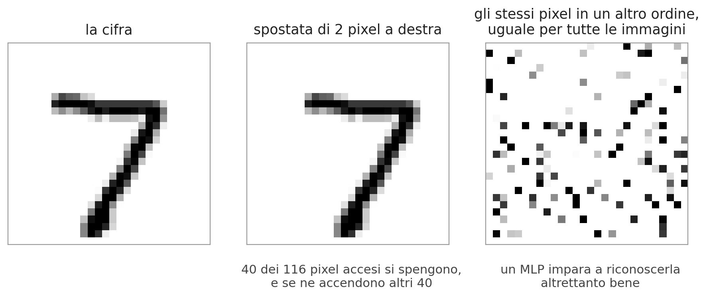
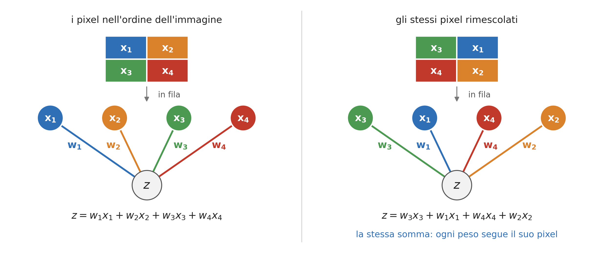
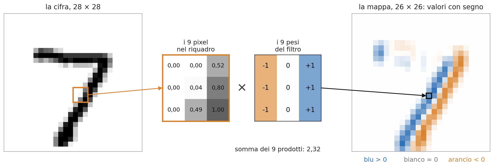
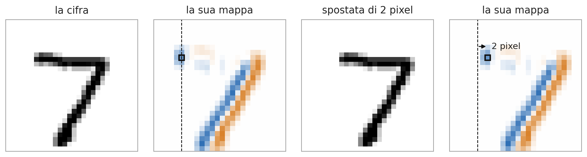
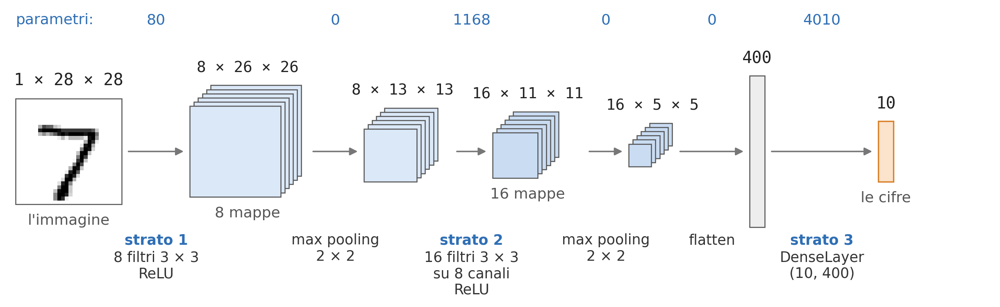
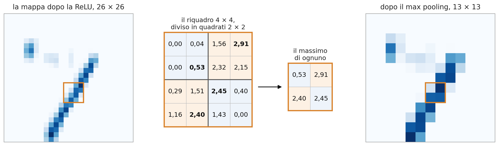
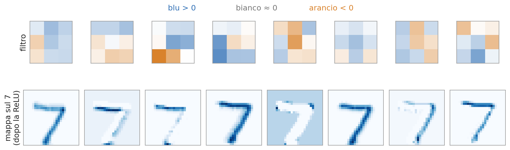

Programmazione Scientifica++: Lezione 15
Tipi enumerati (enum class) e upcasting
La rete MNIST non vede un’immagine

La rete dei laboratori mette i 784 pixel in fila in un vettore: per lei il pixel 300 non è più vicino al 301 che al 700. Spostando la cifra di 2 pixel il vettore cambia quasi del tutto. E se si rimescolassero i pixel di tutte le immagini, sempre nello stesso modo, la rete imparerebbe altrettanto bene (slide seguente): la geometria dell’immagine non la usa.
Per l’MLP l’ordine dei pixel non conta

Ogni neurone del primo strato fa una somma pesata di tutti i pixel, con un peso per ogni pixel. Se si rimescolano i pixel di tutte le immagini sempre nello stesso modo, ogni pixel si porta dietro il suo peso: la somma non cambia, e la rete riconosce le cifre come prima. Conta quali pixel sono accesi, non quanti; quello che l’MLP non sa è quali pixel sono vicini.
Un filtro che scorre

Un filtro è una somma pesata di pixel vicini, con un peso per pixel e un bias. Qui il quadrato è 3 × 3, quindi 9 pesi; si usano anche quadrati più grandi: \[z_{ij} = \sum_{p=0}^{2} \sum_{q=0}^{2} w_{pq}\, x_{i+p,\, j+q} + b\] Calcolata in tutte le posizioni in cui il quadrato sta dentro l’immagine, 26 × 26, dà una nuova immagine, la mappa. Questo filtro sottrae la colonna di sinistra da quella di destra: la mappa è positiva dove il tratto comincia, andando verso destra, e negativa dove finisce. Rivela i bordi verticali.
Gli stessi 9 pesi ovunque

Il filtro usa gli stessi 9 pesi in tutte le posizioni. Il primo strato della rete dei laboratori, DenseLayer(128, 784), ha invece 100 352 pesi, uno per ogni coppia pixel-neurone.
Per questo, se la cifra si sposta di 2 pixel, la mappa si sposta di 2 pixel e resta uguale: un bordo si riconosce dovunque sia.
Dai bordi alle cifre

- Più filtri danno più mappe, i canali: qui 8. Il max pooling ne riduce i valori a un quarto.
- Ogni filtro dello strato 2 pesa 3 × 3 pixel di tutte le 8 mappe, con pesi diversi per ogni mappa (\(8 \cdot 9 = 72\) pesi): combina i bordi in forme più grandi.
- Il flatten mette i 16 × 5 × 5 valori in un vettore di 400 (una matrice con una colonna), come i pixel di MNIST. Nei diagrammi uno strato è un gruppo di
Layerdel framework: qui i pesi con la loro attivazione. - Questa CNN è una fra le tante possibili (approfondimento): 5258 parametri, 98,4-98,6% sul test, contro il 97,8% della 784 → 128 → 10 (101 770 parametri, stesso addestramento).
Il max pooling

Il max pooling divide ogni mappa in quadrati 2 × 2 e di ciascuno tiene il valore più grande: da 26 × 26 a 13 × 13, un quarto dei valori.1 Non ha pesi da imparare.
Serve a ridurre i numeri che arrivano al DenseLayer finale. Senza i due pooling sarebbero 16 × 24 × 24 = 9216, e il solo DenseLayer(10, 9216) avrebbe 92 170 parametri, quasi quanti la rete 784 → 128 → 10. Con il pooling: 400 numeri, 4010 parametri.
I filtri si imparano

Nessuno sceglie i pesi dei filtri: partono casuali e li fissa la backpropagation, come quelli di un DenseLayer. Sopra, gli 8 filtri dello strato 1 della rete di due slide fa, dopo l’addestramento; sotto, le loro mappe sul 7.
Ogni filtro fa una domanda su 3 × 3 pixel, e la sua mappa dice dove la risposta è sì. Con 8 filtri le domande sono semplici: quasi tutti rispondono al tratto, chi più sul lato di sopra, chi su quello di destra, e uno allo sfondo; sono meno netti del filtro scelto a mano nella slide 4. Più in profondità le domande riguardano zone più grandi e combinano le risposte dello strato precedente: lo strato 1 trova pezzi di tratto, lo strato 2 li mette insieme in spigoli e curve.
Argomenti di oggi
- I numeri magici: un numero nel codice il cui significato sta solo in un commento
- Gli
enum: ripasso del C, e cosa cambia in C++ - Gli
enum class: i valori portano il nome del tipo, e non si convertono da soli inint - Lo
switchsu unenum class: il compilatore avverte se manca un caso - L’upcasting: da un puntatore alla classe derivata a un puntatore alla classe base
- Esercizio (facoltativo): un
enum classper scegliere l’ottimizzatore
Gli argomenti di oggi nel framework
enum class. I pesi di unDenseLayersi inizializzano con una formula scelta fra due, He o Xavier, e con una distribuzione uniforme o gaussiana. Nel framework la scelta si passa con dueenum class: il compilatore rifiuta un numero al loro posto, o i due argomenti scambiati.- Upcasting. Il
Sequentialdel Laboratorio 06 tiene i layer in unstd::vector<Layer*>: inrete.add(new DenseLayer(128, 784))ilDenseLayer*diventa unLayer*. È l’upcasting.
La cartella della lezione
Come nelle lezioni precedenti, gli esempi si scrivono e si compilano durante la lezione, in una cartella a parte.
CMakeLists.txt
cmake_minimum_required(VERSION 3.15)
project(Lezione15)
set(CMAKE_CXX_STANDARD 17)
set(CMAKE_CXX_STANDARD_REQUIRED ON)
set(CMAKE_CXX_FLAGS "${CMAKE_CXX_FLAGS} -Wall")
# AddressSanitizer (Lezione 08)
add_compile_options(-fsanitize=address -g)
add_link_options(-fsanitize=address)
# qui una riga add_executable per esempio- Create la cartella
LEZIONE_15, fuori dabasic_neural_plusplus, e apritela in VS Code. - Createvi il file
CMakeLists.txtqui a sinistra. - Dalla cartella
LEZIONE_15:
cmake -B build.
Il CMakeLists.txt è quello della Lezione 13, con -Wall e l’AddressSanitizer.
Un eseguibile per esempio
Sopra ogni esempio c’è il nome del suo file. Quando lo incontrate, create il file, copiatevi il codice e aggiungete al CMakeLists.txt la sua riga:
Poi, dalla cartella LEZIONE_15, compilate ed eseguite solo quell’esempio:
I messaggi citati sono quelli di g++ su Linux; con clang (macOS) il testo cambia, il significato no.
I numeri magici
magici.cpp
#include <iostream>
// type: 0 = He, 1 = Xavier
// distro: 0 = uniforme, 1 = gaussiana
void init_weights(int type, int distro) {
if (type == 0) std::cout << "He, ";
else std::cout << "Xavier, ";
if (distro == 0) std::cout << "uniforme\n";
else std::cout << "gaussiana\n";
}
int main() {
init_weights(0, 1); // He, gaussiana
return 0;
}Una funzione che sceglie come inizializzare i pesi di un layer: con la formula di He o con quella di Xavier, e con numeri casuali uniformi o gaussiani. Qui stampa solo la scelta.
La scelta si passa con due int. Che 0 voglia dire He e 1 gaussiana lo dice solo il commento delle righe 3 e 4.
Un numero così, il cui significato non si legge nel codice, si chiama numero magico.
Provate: i numeri magici
In magici.cpp, alla riga 13:
- Scambiate i due argomenti:
init_weights(1, 0);. Compila? Cosa stampa?
Compila senza avvisi e stampaXavier, uniforme: per il compilatore sono dueintcome prima. - Scrivete
init_weights(7, 1);. Compila? Cosa stampa?
Compila e stampaXavier, gaussiana: ogni valore diverso da 0 diventa Xavier, e nessuno se ne accorge.
Il compilatore non può aiutare: per lui type e distro sono due interi qualsiasi. Serve un tipo che ammetta solo i valori previsti, e che li chiami per nome.
Ripasso: gli enum, come in C
enum_c.cpp
#include <iostream>
enum InitType { HE, XAVIER };
enum DistroType { UNIFORM, GAUSSIAN };
void init_weights(InitType type, DistroType distro) {
if (type == HE) std::cout << "He, ";
else std::cout << "Xavier, ";
if (distro == UNIFORM) std::cout << "uniforme\n";
else std::cout << "gaussiana\n";
}
int main() {
init_weights(HE, GAUSSIAN);
int n = XAVIER; // un enum si converte in int
std::cout << n << "\n";
return 0;
}Come in C, un enum è un tipo nuovo, un’enumerazione, che elenca i suoi valori, gli enumeratori, numerati da 0. In C++ si scrive InitType, senza enum davanti.
Due difetti:
- gli enumeratori stanno nello scope dell’
enum, qui globale: un altroenumnon può avere un valoreUNIFORM; - un
enumsi converte da solo inint: la riga 15 stampa1.
Gli enum class
enum_class.cpp
#include <iostream>
enum class InitType { HE, XAVIER };
enum class DistroType { UNIFORM, GAUSSIAN };
void init_weights(InitType type, DistroType distro) {
if (type == InitType::HE) std::cout << "He, ";
else std::cout << "Xavier, ";
if (distro == DistroType::UNIFORM)
std::cout << "uniforme\n";
else
std::cout << "gaussiana\n";
}
int main() {
init_weights(InitType::HE, DistroType::GAUSSIAN);
int n = static_cast<int>(InitType::XAVIER);
std::cout << n << "\n";
return 0;
}Un enum class (C++11) corregge i due difetti:
- i valori si scrivono con il nome del tipo davanti,
InitType::HE: stanno nello scope dell’enumerazione, e non si scontrano con altri; - un valore non si converte da solo in
int. Quando serve il numero lo si chiede constatic_cast<int>(Lezione 04), come alla riga 17.
L’output è lo stesso di enum_c.
Provate: gli enum class
In enum_class.cpp, gli esperimenti di magici.cpp:
- Alla riga 16 scrivete
init_weights(1, 0);. Compila?
No:error: cannot convert 'int' to 'InitType'. - Scambiate i due argomenti:
init_weights(DistroType::GAUSSIAN, InitType::HE);. Compila?
No:error: cannot convert 'DistroType' to 'InitType'. - Rimettete la riga 16 com’era, e alla riga 17 scrivete
int n = InitType::XAVIER;. Compila?
No:error: cannot convert 'InitType' to 'int' in initialization: il numero si chiede constatic_cast<int>.
Gli errori che in magici.cpp passavano senza avvisi ora li trova il compilatore.
Ripasso: lo switch, su un enum class
sigma.cpp
#include <cmath>
#include <iostream>
enum class InitType { HE, XAVIER };
// deviazione standard dei pesi gaussiani (Laboratorio 08)
double sigma(InitType type, int n_in, int n_out) {
switch (type) {
case InitType::HE:
return std::sqrt(2.0 / n_in);
case InitType::XAVIER:
return std::sqrt(2.0 / (n_in + n_out));
}
return 0.0;
}
int main() {
std::cout << sigma(InitType::HE, 784, 128) << "\n";
std::cout << sigma(InitType::XAVIER, 784, 128) << "\n";
return 0;
}Lo switch è quello del C; i case sono i valori dell’enum class.
sigma è la deviazione standard dei pesi iniziali gaussiani, con n_in ingressi e n_out neuroni, come nel framework. Stampa 0.0505076 e 0.0468293.
Il return 0.0; della riga 14 serve al compilatore: senza, g++ avverte che la funzione può finire senza restituire niente.
Provate: un caso dimenticato
In sigma.cpp:
- Alla riga 4 aggiungete un terzo valore:
enum class InitType { HE, XAVIER, LECUN };. Compila?
Compila, con un avviso:warning: enumeration value 'LECUN' not handled in switch [-Wswitch]. Il compilatore segnala ogniswitchda aggiornare. - Ora aggiungete allo
switch, dopo il secondocase, le righedefault:ereturn 0.0;. Cosa cambia?
L’avviso sparisce: con ildefaulttutti i casi sono coperti. Masigma(InitType::LECUN, 784, 128)restituisce 0, e nessuno lo segnala.
Lo switch su un enum class si scrive senza default: così, quando l’enumerazione cresce, è il compilatore a dire cosa manca. Con g++ l’avviso richiede -Wall, che il nostro CMakeLists.txt ha sempre.
enum o classi derivate?
Le attivazioni si potrebbero scegliere come l’inizializzazione, con un enum class e uno switch dentro DenseLayer. Nel framework invece sono classi derivate da Layer, come SigmoidLayer.
- Un
enum classcon unoswitchva bene quando i casi sono pochi, fissati, e differiscono per una formula o un nome, come He e Xavier. - Una classe derivata serve quando ogni caso ha dati e metodi propri, come un layer, che ha il suo
forwarde i suoi pesi, o nessun peso; anche un’attivazione può avere pesi da imparare. Per aggiungere un caso si scrive una classe nuova, senza toccare quelle che ci sono.
Il resto della lezione torna alle classi derivate della Lezione 12.
Ripasso: un DenseLayer è un Layer
upcasting.cpp
#include <iostream>
class Layer {
public:
virtual ~Layer() = default;
virtual void forward() const {
std::cout << "Layer::forward\n";
}
};
class DenseLayer : public Layer {
private:
int Nn_, Ni_;
public:
DenseLayer(int Nn, int Ni) : Nn_(Nn), Ni_(Ni) {}
void forward() const override {
std::cout << "DenseLayer::forward\n";
}
int numero_pesi() const { return Nn_ * Ni_; }
};Le classi della Lezione 12, con un metodo in più che Layer non ha: numero_pesi, il numero di pesi del layer.
Come nella Lezione 12, forward è virtual e DenseLayer lo sostituisce con override; il distruttore di Layer è virtual.
L’upcasting
upcasting.cpp
Output:
DenseLayer::forward
100352Nella Lezione 12 l’indirizzo di un DenseLayer andava in un Layer* senza conversioni esplicite, come alla riga 24. Questa conversione, dalla classe derivata alla classe base, si chiama upcasting: nei diagrammi delle classi la classe base sta in alto.
È implicita perché è sicura: un DenseLayer contiene tutto ciò che contiene un Layer, e ha tutti i suoi metodi.
Attraverso p si chiama forward, che è virtual: viene eseguito quello di DenseLayer.
Provate: l’upcasting
In upcasting.cpp, alla riga 26, scrivete p->numero_pesi() al posto di d.numero_pesi(). Compila?
No: error: 'class Layer' has no member named 'numero_pesi'.
Attraverso un Layer* si chiamano solo i metodi di Layer. Se un metodo è virtual, come forward, viene eseguito quello della classe vera dell’oggetto; un metodo che c’è solo in DenseLayer, attraverso p, non si vede.
La conversione inversa, da Layer* a DenseLayer*, si chiama downcasting: è l’argomento della Lezione 16.
Esercizio facoltativo: l’ottimizzatore
Scopo: un enum class e uno switch per scegliere l’ottimizzatore. Gli ottimizzatori della Lezione 20 saranno classi derivate, con dati propri: qui si scrive solo la scelta.
In esercizio_ottimizzatore.cpp (slide seguente):
- Prima della funzione
nomedichiarate l’enum class OptimizerType, con i valoriSGD,ADAMeRMSPROP. - Cambiate il parametro di
nomeinOptimizerType opt, e scrivete il corpo: unoswitchsuopt, senzadefault, che restituisce"SGD","Adam"o"RMSprop". - Nel
mainscommentate le tre righe. Output atteso, su due righe:Adame1.
Poi provate a chiamare nome(1): cosa dice il compilatore?
Ottimizzatore: il file da completare
esercizio_ottimizzatore.cpp
#include <iostream>
#include <string>
// da completare: l'enum class OptimizerType, con i valori SGD, ADAM e RMSPROP
// da completare: il parametro diventa OptimizerType opt, e il corpo uno switch
// su opt, senza default, che restituisce "SGD", "Adam" o "RMSprop"
std::string nome(int opt) {
return "";
}
int main() {
// da scommentare:
// OptimizerType opt = OptimizerType::ADAM;
// std::cout << nome(opt) << "\n";
// std::cout << static_cast<int>(opt) << "\n";
return 0;
}Compila così com’è e non stampa niente.
Soluzione dell’esercizio
esercizio_ottimizzatore.cpp
#include <iostream>
#include <string>
enum class OptimizerType { SGD, ADAM, RMSPROP };
std::string nome(OptimizerType opt) {
switch (opt) {
case OptimizerType::SGD: return "SGD";
case OptimizerType::ADAM: return "Adam";
case OptimizerType::RMSPROP: return "RMSprop";
}
return "";
}
int main() {
OptimizerType opt = OptimizerType::ADAM;
std::cout << nome(opt) << "\n";
std::cout << static_cast<int>(opt) << "\n";
return 0;
}nome(1) non compila:
error: cannot convert 'int' to 'OptimizerType'.
Con clang il messaggio è diverso: no matching function for call to 'nome', con una nota: no known conversion from 'int' to 'OptimizerType'.